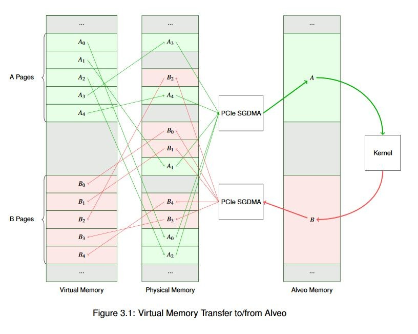

2020.2 Vitis ™ - ランタイムおよびシステムの最適化 - ランタイム ソフトウェア デザインxilinx.com の Vitis™ 開発環境を参照 |
メモリ割り当ての概念¶
CPU 上でプログラムを実行する際は、ハードウェアでメモリがどのように管理されているかを気にすることは通常ありません。一部のプロセッサ アーキテクチャではアライメントなどの問題が発生することがありますが、現代の OS およびコンパイラではこれらが抽象化されているので、ユーザーが下位ドライバーにかかわる作業 (またはアクセラレーション) を実行するのでない限り、ユーザーには見えないようになっています。
基本的には、メモリには 6 つの属性があると考えることができます。まずデータ バッファーへのポインターでは、データ ポインターは仮想または物理です。そのポインターが指定するメモリは、ページング方式を使用しているか、物理的に連続しています。最後に、プロセッサの視点から見ると、メモリはキャッシュ可能またはキャッシュ不可能です。
現代のほとんどの OS では、仮想メモリが使用されています。これには多くの理由がありますが、この資料では説明ません。ここでは、XRT を実行するのに通常に使用される Linux では、仮想メモリが使用されるということを知っておくだけで十分です。そのため、標準 C または C++ のユーザー空間の API 関数 (malloc()、new など) を使用すると、ポインターが指定するのは物理メモリ アドレスではなく仮想メモリ アドレスです。
また、ほとんどの場合、ページング方式を使用するメモリのアドレス ブロックを指定するポインターを使用することになります。Linux を含む現代のほとんどの OS では、アドレス範囲はページという単位に分割され、各ページのサイズは 4 KiB です (サイズは OS によって異なる可能性あり)。各ページは、物理メモリの対応するページにマップされます。この説明は、不正確に単純化されていると指摘する声もあるかもしれませんが、この資料はコンピューター アーキテクチャの教科書ではないので、ここでは詳細な説明は省きます。
ただし、重要なことを 2 点指摘しておきます。1 点目は、標準 C の API を使用してヒープからバッファーを割り当てても、物理メモリ アドレスは取得できないということ、2 点目は、1 つのバッファーではなく長さが 4 KiB のメモリ ページ N 個が取得されるということです。これを具体的に説明します。たとえば、6 MiB のバッファーを割り当てるとします。ページ数は次のようになります。
(1024 B * 1024 B * 6) / (1024 B * 4) = 1,536 Pages6 MiB バッファー全体をホストから Alveo Alveo データセンター アクセラレータ カードにコピーする場合は、1536 個の仮想ページ アドレスを物理メモリ アドレスに変換する必要があります。その後、これらの物理アドレスをスキャッター ギャザー リストにまとめ、スキャッター ギャザー機能を持つ DMA エンジンにエンキューし、これらのページを 1 つずつそれぞれのデスティネーションにコピーします。Alveo カードからバッファーをホスト メモリの仮想、ページング方式アドレス範囲にコピーする場合は、この逆になります。ホスト プロセッサは通常高速なので、このリストを作成するのにそれほど時間はかかりません。ただし、バッファーのサイズがそれなりに大きいため、システムの全体的なレイテンシに影響する可能性があるので、システムの全体的なパフォーマンスへの影響を理解しておくことが重要です。
次に、このようなシステムの簡略図を示します。この例には、A および B という 2 つの仮想バッファーがあります。この例では、バッファー A のデータを Alveo に転送して処理し、バッファー B をアップデートして、結果をバッファー A に戻します。この図から、仮想メモリから物理メモリにどのようにマップされるのかがわかります。Alveo カード内では、アクセラレータは物理メモリ アドレスでのみ操作を実行するので、データは常に連続して格納されます。これは、これが一般的に最高のパフォーマンスを得ることのできる構成だからです。

このような単純なデータフローであっても、既に少し複雑です。ここで、何メガバイト (またはギガバイト) にも及び、何千ページもある非常に大きなバッファーを考えてみてください。ホスト プロセッサがいくら高速でも、これらのスキャッター ギャザー リストを作成して管理し、ページ テーブルも管理するのにどれだけ時間がかかるか想像がつきます。実際のメモリは通常この例ほど細分割されていませんが、ページの物理アドレスは事前にわからないので、これらのアドレスはそれぞれ固有なアドレスとして処理する必要があります。
物理メモリでページがすべて連続しているとわかっていれば、スキャッター ギャザー リストを作成するのもずっと簡単になります。データ バイトが順に並んでいれば、物理アドレスをインクリメントするとデータ [n+1] が得られるので、バッファーの開始アドレスとサイズがわかればスキャッター ギャザー リストを作成できます。
これは、DMA と Alveo カードの間の操作だけでなく、多くの DMA 操作で有益です。現代のオペレーティング システムでは、この目的のためだけに、メモリ アロケーター (通常はカーネル サービスを介して提供) があります。Linux では、これは連続メモリ アロケーター サブシステムを使用して実行されます。これはカーネル空間の機能ですが、dmabuf、XRT API、グラフィック ドライバーなど、さまざまなメカニズムを介してユーザーが確認できます。先ほどのバッファーを連続で割り当てると、次の図に示すように、すっきりとした図になります。

バッファーが 4k ページの境界で開始しない場合はどうなるでしょうか。DMA エンジンではある程度のアライメントが必要ですが、Alveo の DMA も例外ではありません。割り当てられたメモリがページの境界に揃えられていない場合、ランタイムにより自動的に揃えられます。そのために memcpy() 演算が追加されるので、演算コストが高くなります。これはできるだけ早期に解決すべき問題なので、警告メッセージを非表示に設定していなければ、ランタイムから警告メッセージも表示されます。この問題の特定方法および修正方法は、後ほど説明します。
最後に、メモリがキャッシュ可能なのか、キャッシュ不可能なのかを知る必要があります。外部メモリへのアクセスはコストが高いので、現代のほぼすべてのプロセッサにレイテンシが非常に短い内部データ キャッシュがあります。プロセッサのアーキテクチャによって、キャッシュのサイズは数十キロバイトから数メガバイトまでさまざまです。この内部キャッシュ メモリは、必要に応じて外部の物理メモリと同期化されます。通常、このキャッシュ管理はプロセッサ上で実行されているソフトウェアには見えません。キャッシュを使用する利点は実行時間の短縮により確認できますが、開発者がキャッシュに手を加える必要は通常ありません。
ただし、DMA を使用する場合は、CCIX などのキャッシュ コヒーレンシを共有する技術がなく、プロセッサとアクセラレータが共有する必要のあるデータはすべて、転送前に外部メモリと同期化させる必要があります。DMA 転送を開始する前に、キャッシュにあるデータを外部メモリにフラッシュする必要があります。同様に、外部メモリからデータが戻されると、キャッシュにあるデータを無効化して、外部メモリから更新する必要があります。これらの操作は、x86 型のプロセッサでは非常に高速に実行され、ランタイムにより透過的に実行されます。ただし、ほかのアーキテクチャでは、キャッシュ管理がパフォーマンスに影響する可能性があるので、API にキャッシュ不可能なバッファーを割り当て、操作する機能があります。キャッシュ不可能なバッファーのデータにアクセスするプロセッサは、キャッシュ管理操作のみを実行する場合よりも処理速度がかなり遅くなります。これは通常、プロセッサがバッファーに順次にアクセスしているものの、バッファーに含まれるデータにはアクセスしないモデルで使用されます。
Alveo ソフトウェア入門¶
ここまでで、多くの背景情報を学びました。ソフトウェアの例を実行する前に、ここまでで学んだ重要点を復習しておきます。
アクセラレーションは通常、同じタスクを高速に実行する方法 (アムダールの法則) と、同じ時間内により多くのタスクを実行する方法 (グスタフソンの法則) を組み合わせて実行されます。これら 2 つ方法では、最適化方法および最適化の効果があるか異なります。
アクセラレーションには「アクセラレーション税」 (コスト) がかかります。実際のシステムでアクセラレーションを達成するには、それで得られる利益が、アクセラレーションのために発生する追加レイテンシを上回る必要があります。つまり、アルゴリズムで「コストに見合う価値」が最大限になるような方法を選択する必要があります。
Alveo カードとの通信には、OpenCL や XRT ネイティブ API などの上位 API を使用します。ソフトウェア側の最適化は、ハードウェア カーネルの最適化とは別に、ライブラリを使用して実行されます。
メモリの割り当てと管理は、アプリケーションの全体的なパフォーマンスに大きな影響を与えます。
これらのトピックについて、例を使用して詳しく説明します。
次のセクション: ソフトウェアの例
Copyright© 2019-2021 Xilinx